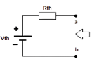
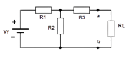
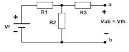
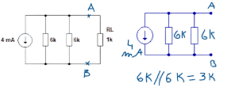

O Teorema de Thevenin permite substituir qualquer circuito linear e bilateral por um circuito equivalente simples, formado por uma fonte de tensão Vth (tensão de Thevenin) em série com uma resistência Rth (resistência de Thevenin).
Esse circuito fornece o mesmo efeito elétrico (mesma corrente e tensão) sobre a carga RL que o circuito original.
Ou seja ele é um método para facilitar apenas o cálculo de uma carga RL que você deseja.
A resistência equivalente de Thevenin (Rth) é obtida observando o circuito pelos terminais onde se conecta a carga RL, com todas as fontes desativadas e a carga removida.
Passos:
1. Retirar a carga RL, deixando o circuito aberto entre os pontos a e b.
2. Desativar todas as fontes:
• Fontes de tensão → substituir por curto-circuito.
• Fontes de corrente → substituir por circuito aberto.
3. Calcular a resistência equivalente entre os pontos a e b:
Req = Rth
A tensão de Thevenin (Vth) é a tensão medida entre os pontos a e b com a carga RL removida e todas as fontes ativas.
Passos:
1. Retirar a carga RL.
2. Ativar todas as fontes (mantendo as tensões e correntes originais).
3. Medir ou calcular a tensão entre os pontos a e b:
Vth = Voc (tensão de circuito aberto)
Determinar o circuito equivalente de Thevenin entre os pontos a e b.
Etapas:
1) Retirar a carga RL.
2) Desativar todas as fontes → calcular Rth(caso tenha mais de uma fonte).
3) Ativar todas as fontes → calcular Vth.
4) Montar o circuito equivalente de Thevenin.
Cálculos:
Rth = 3k Ω
Vth = 12 V(própria fonte, pois só tinha uma fonte).
O circuito equivalente é formado por uma fonte de 12 V em série com uma resistência de 3k Ω, ligada à carga RL.
O circuito equivalente de norton está previsto na parte de fontes equivalentes!!